Case study · Builders Patch
SiteMatch
Affordable housing developers spend months evaluating potential sites — manually, without data. SiteMatch surfaces the best sites based on estimated QAP score, so developers can find and secure funding faster.

Background
A process built on guesswork and regulation.
Affordable housing development is one of the most complex and bureaucratic processes in real estate. Developers rely on a government scoring system — the QAP (Qualified Allocation Plan) — to secure LIHTC tax credit funding. The higher their QAP score, the better their chances. But navigating QAP criteria across 50 states, with constantly changing policies and scarce data, is nearly impossible to do accurately at speed.
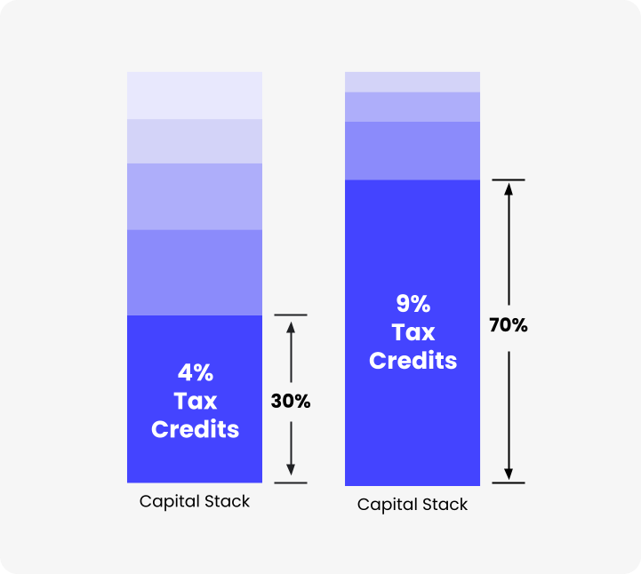
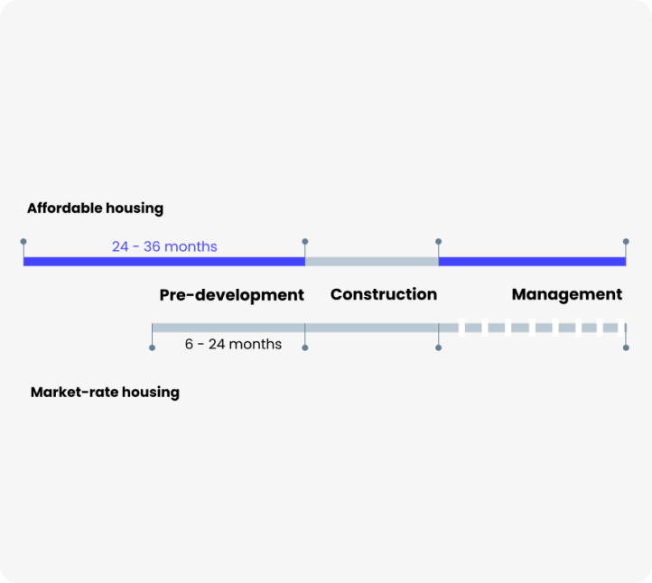
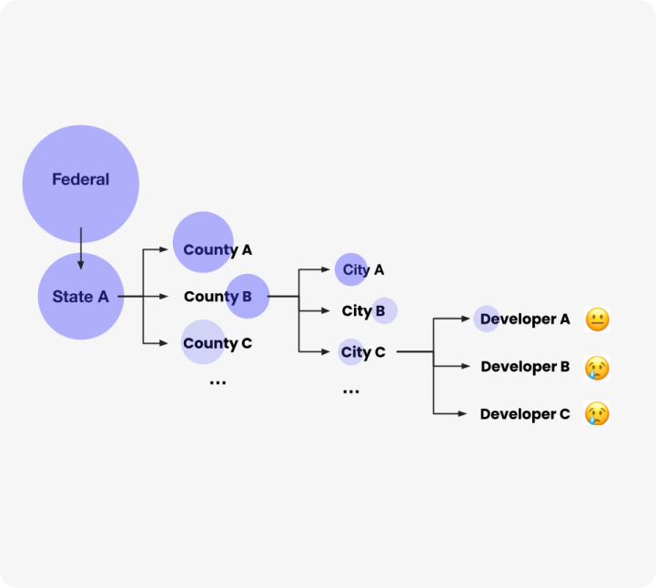
Research
10 expert interviews. One clear opportunity.
We interviewed developers, architects, and consultants working in affordable housing along the East Coast to understand where the real friction was. The answer: site selection. Developers had no reliable tool to identify and evaluate sites against QAP criteria — they were doing it manually, with outdated information, from scattered sources.
What is QAP? The 5 selection criteria developers must optimize against
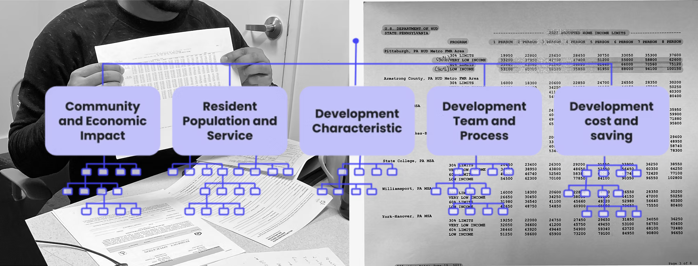
Value opportunity analysis — where in the process could we actually intervene?
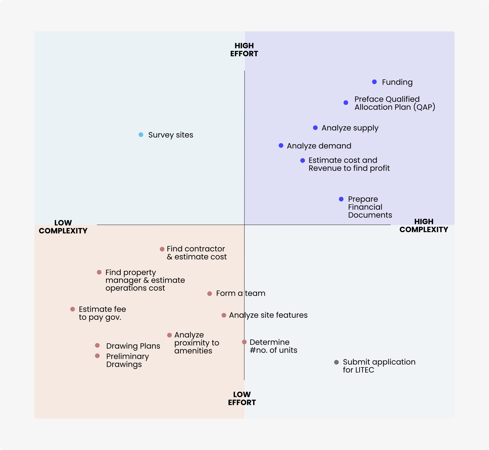
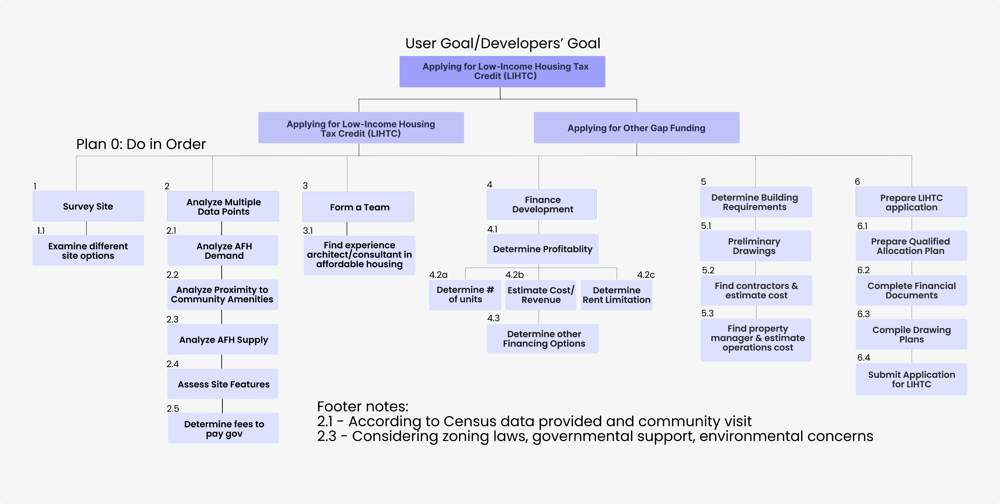
Defining criteria — the 7 values developers prioritize
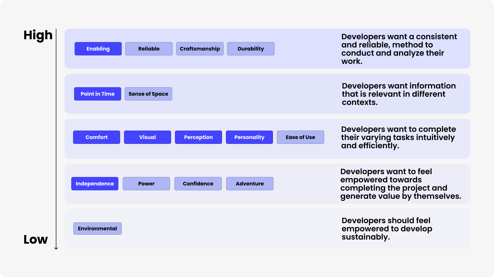
Design thinking
Three concepts. One winner.
After a Build-a-thon with Crazy 8 ideation and physical wire-framing, the team converged on three concepts — each solving the problem from a different angle.
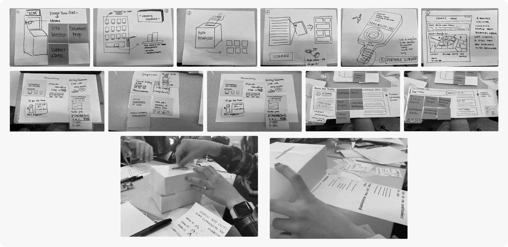


Co-design workshops with developers, architects, and multi-housing experts
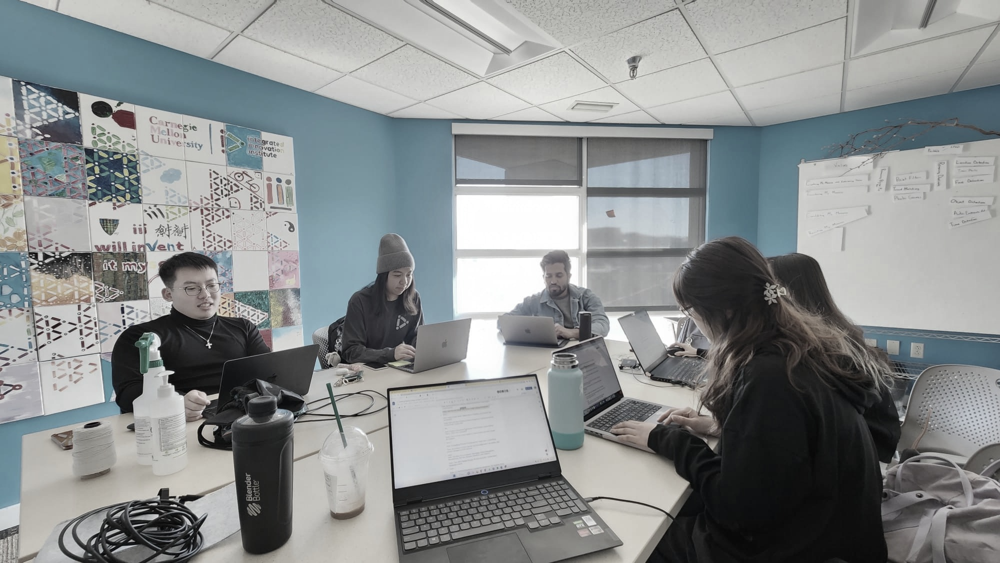
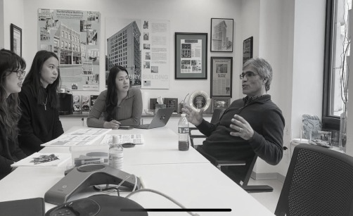
Final design
Find the right site. Score it. Win the funding.
SiteMatch is a one-stop platform for reliable, integrated, and up-to-date site information — organized around what developers actually need to decide: which site gives them the best shot at funding.
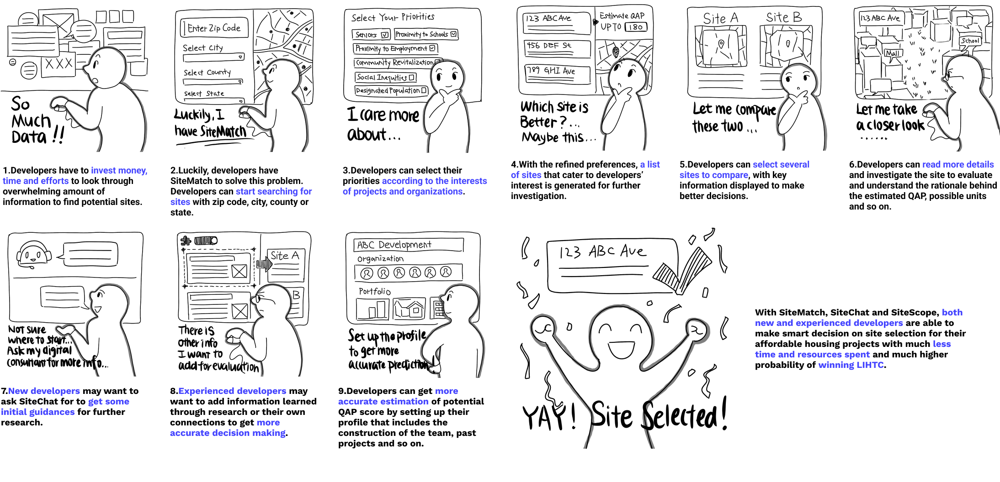
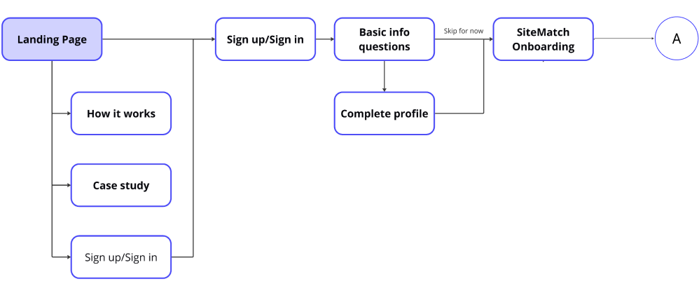
Impact
Value delivered.
SiteMatch reduces pre-development time to under 12 months, centralizes scattered site data, and gives developers a clear path to maximizing their QAP score — and their chances of securing LIHTC funding.